자동차정비기사 (2014-08-17 기출문제)
1과목: 일반기계공학
1. 코일 스프링에서 코일의 평균지름을 D(㎜), 소선의 지름을 d(㎜)라고 할 때 스프링 지수를 바르게 표현한 것은?
- D/d
- d/D
- πD/d
- 2πd/D
(정답률: 63%)

2. 포와송 비(Possion's ratio)에 관한 설명으로 옳은 것은?
- 종변형률과 횡변형률의 곱이다.
- 전단응력과 횡탄성계수의 곱이다.
- 횡변형률을 종변형률로 나눈 값이다.
- 수직응력과 종탄성계수를 곱한 값이다.
(정답률: 72%)
3. 압력제어밸브 중 회로 내의 압력이 설정값에 도달하면 오일의 일부 또는 전부를 배출구로 되돌려서 회로 내의 압력을 일정하게 유지되게 하는 역할을 하는 밸브는?
- 감압 밸브
- 시퀀스 밸브
- 릴리프 밸브
- 언로우딩 밸브
(정답률: 63%)
4. 열처리 종류 중 재료의 결정입자를 미세하게 하고 조직을 균일하게 하는 것은?
- 불림
- 풀림
- 뜨임
- 담금질
(정답률: 52%)
5. 길이 100㎝의 강재가 인장력을 받아 0.04㎝의 신장을 보였다. 이 봉의 인장변형률은 얼마인가?
- 0.03%
- 0.04%
- 0.⑤%
- 0.06%
(정답률: 68%)
6. 4각 나사와 비교한 3각 나사의 일반적인 특징으로 옳지 않은 것은?
- 마찰계수가 작다.
- 이송효율이 나쁘다.
- 체결용으로 적합하다.
- 자립(self-lock)작용이 있다.
(정답률: 57%)
7. 지름 110㎜, 회전수 500rpm인 축에 묻힘키를 폭 28㎜, 높이 18㎜, 길이 300㎜로 설계하려고 한다면 키의 전단응력에 의한 전달동력은 약 몇 PS인가? (단, 키의 허용전단응력(ϒn)은 3.2kgf/mm2이다.)
- 516
- 762
- 1032
- 2580
(정답률: 42%)
8. 서브머지드 아크 용접(submerged arc welding)의 장점으로 옳지 않은 것은?
- 용융 및 용착속도가 빠르다.
- 작업능률이 수동에 비해 높다.
- 유해광선 및 흄 등의 발생이 적다.
- 개선각을 크게 하여 용접의 패스수를 줄일 수 있다.
(정답률: 68%)
9. 비틀림이 작용하고 있을 때 축의 강도(torsional rigidity)를 바르게 표현한 것은?
- 전단탄성계수＋극관성 모멘트
- 전단탄성계수－극관성 모멘트
- 전단탄성계수 × 극관성 모멘트
- 전단탄성계수 ÷ 극관성 모멘트
(정답률: 66%)
10. 보의 단면 형상의 경제적인 설계방법이 아닌 것은?
- 단면적이 커짐에 따라 단면계수를 작게 한다.
- 저항모멘트를 증가시키기 위해 단면계수를 크게 한다.
- 재료를 중립축에 가까운 부분에서는 작게 하고 바깥쪽으로 많이 분포하도록 한다.
- 단면계수와 안전계수가 일정하다고 할 때 단면의 형상이 폭에 비해 높이가 높은 단면이 높이가 낮은 단면보다 면적을 작게 한다.
(정답률: 34%)
11. 리머(reamer)에 관한 설명으로 옳지 않은 것은?
- 구멍의 내면을 매끈하고 정밀하게 가공한다.
- 리머자루는 모스 테이퍼 자루와 직선 자루가 있다.
- 경사각은 축선에 대하여 강의 경우 5∼10°정도이다.
- 절삭날은 적은 것이 좋으며 홀수날로 부등 간격일 때, 채터링이 발생한다.
(정답률: 72%)
12. 정밀주조법 중 셀 몰드법의 특징이 아닌 것은?
- 대형제품에 유리하다.
- 자동차, 재봉틀 등의 주물에 사용한다.
- 제작이 용이하며 대량생산에 용이하다.
- 모래가 적게 들고 주물의 뒤처리가 간단하다.
(정답률: 45%)
13. 재료가 일정온도에서 일정하중을 장시간동안 받은 경우 서서히 변화하는 현상과 가장 관계가 깊은 것은?
- 피닝(peening)
- 크리프(creep)
- 어닐링(annealing)
- 크로마이징(chromizing)
(정답률: 70%)
14. 탄소강에 관한 설명으로 옳지 않은 것은?
- 강의 탄소량은 0.03∼1.7%이하이다.
- 탄소강의 용해 온도는 탄소량에 따라 각각 다르다.
- 탄소량이 많을수록 인장강도는 커지나 연성은 낮다.
- 200∼300℃의 강은 상온에서 보다 강도는 증가하며 연신율도 매우 커진다.
(정답률: 44%)
15. 유압 및 공기압 용어 중 표준상태가 의미하는 것으로 가장 적합한 정의는?
- 온도 0℃, 절대압 1.332kPa, 상대습도 50%인 공기상태
- 온도 0℃, 절대압 101.3kPa, 상대습도 65%인 공기상태
- 온도 10℃, 절대압 1.332kPa, 상대습도 50%인 공기상태
- 온도 20℃, 절대압 101.3kPa, 상대습도 65%인 공기상태
(정답률: 65%)
16. 엔진의 출력이 150마력, 회전수 5500rpm인 경우, 중공 (中空)의 원통을 사용한 추진축의 내경은 몇 ㎜인가? (단, 변속기의 최대 속도비는 3.85, 축의 허용응력이 850kgf/cm2, 축의 외경은 70㎜로 한다.)
- 55.2
- 57.5
- 65.2
- 67.6
(정답률: 20%)
17. 판재를 사용하여 탄피, 주전자, 들통 등을 제작할 때 사용되는 인발은?
- 관재 인발
- 디프 드로잉
- 선재 인발
- 롤러 다이법
(정답률: 66%)
18. 그림에서 피스톤 ①의 단면적(A1)이 5cm2, 피스톤 ②의 단면적(A2)이 50cm2일 때, F1에 5kgf의 힘을 가할 때 F2는 몇 kgf의 힘을 가해야 균형이 되는가?
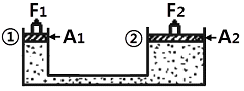
- 10
- 25
- 35
- 50
(정답률: 60%)
19. 연삭작업에서 가공 면에 발생하는 연삭결함이 아닌 것은?
- 글레이징
- 연삭 과열
- 이송 자국
- 연삭 균열
(정답률: 75%)
20. 치직각 모듈이 4이고, 잇수 24, 53인 한 쌍의 헬리컬 기어의 압력각이 20°, 비틀림각이 30°일 때 중심거리는 몇 ㎜인가?
- 154.00
- 177.82
- 174.40
- 2⑤.33
(정답률: 41%)
2과목: 기계열역학
21. 두께가 10㎝이고, 내·외측 표면온도가 각각 20℃와 5℃인 벽이 있다. 정상상태일 때 벽의 중심온도는 몇 ℃인가?(문제 오류로 가답안 발표시 3번으로 발표되었지만 확정 답안 발표시 4번으로 정답이 변경되었습니다. 여기서는 4번을 누르면 정답 처리 됩니다.)
- 4.5
- 5.5
- 7.5
- 12.5
(정답률: 53%)
22. T-S선도에서 어느 가역 상태변화를 표시하는 곡선과 S 축 사이의 면적은 무엇을 표시하는가?
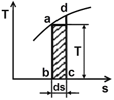
- 힘
- 열량
- 압력
- 비체적
(정답률: 79%)
23. 단열된 노즐에 유체가 10m/s의 속도로 들어와서 200m/s의 속도로 가속되어 나간다. 출구에서의 엔탈피가 he=2770kJ/kg일 때 입구에서의 엔탈피는 얼마인가?
- 4370kJ/kg
- 4210kJ/kg
- 2850kJ/kg
- 2790kJ/kg
(정답률: 38%)
24. 열역학 제 1법칙은 다음과 어떤 과정에서 성립하는가?
- 가역 과정에서만 성립한다.
- 비가역 과정에서만 성립한다.
- 가역 등온 과정에서만 성립한다.
- 가역이나 비가역 과정을 막론하고 성립한다.
(정답률: 73%)
25. 효율이 85%인 터빈에 들어갈 때의 증기의 엔탈피가 3390kJ/kg이고, 가역 단열 과정에 의해 팽창할 경우에 출구에서의 엔탈피가 2135kJ/kg이 된다고 한다. 운동 에너지의 변화를 무시할 경우 이 터빈의 실제 일은 약 몇 kJ/kg인가?
- 1476
- 1255
- 1067
- 906
(정답률: 49%)
26. 체적이 0.1m3인 피스톤-실린더 장치 안에 질량 0.5kg의 공기가 430.5kPa 하에 있다. 정압과정으로 가열하여 온도가 400K가 되었다. 이 과정동안의 일과 열전달량은? (단, 공기는 이상기체이며, 기체상수는 0.287kJ/kg·K, 정압비열은 1.004kJ/kg·K이다.)
- 14.35kJ, 35.85kJ
- 14.35kJ, 50.20kJ
- 43.⑤kJ, 78.90kJ
- 43.⑤kJ, 64.55kJ
(정답률: 66%)
27. 카르노 사이클이 500K의 고온체에서 360kJ의 열을 받아서 300K의 저온체에 열을 방출한다면 이 카르노 사이클의 출력일은 얼마인가?
- 120kJ
- 144kJ
- 216kJ
- 599kJ
(정답률: 63%)
28. 이상기체 프로판(C3H8, 분자량 M=44)의 상태는 온도 20℃, 압력 300kPa이다. 이것을 52L(Liter)의 내압용기에 넣을 경우 적당한 프로판의 질량은? (단, 일반기체상수는 8.314kJ/kmol·K이다.)
- 0.282kg
- 0.182kg
- 0.414kg
- 0.318kg
(정답률: 39%)
29. 작동 유체가 상태 1부터 상태 2까지 가역 변화할 때의 엔트로피 변화로 옳은 것은?
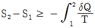
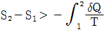
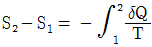
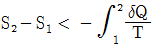
(정답률: 59%)
30. PVn=일정(n≠1)인 가역과정에서 밀폐계(비유동계)가 하는 일은?
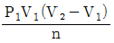
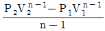
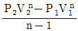
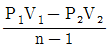
(정답률: 55%)
31. 다음 그림과 같은 오토사이클의 열효율은? (단, T1=300K, T2=689K, T3=2364K, T4=1029K이고, 정적비열은 일정하다.)
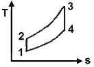
- 37.5%
- 43.5%
- 56.5%
- 62.5%
(정답률: 52%)
32. 공기압축기로 매초 2kg의 공기가 연속적으로 유입된다. 공기에 50kW의 일을 투입하여 공기의 비엔탈비가 20kJ/kg 증가하면, 이 과정동안 공기로부터 방출된 열량은 얼마인가?
- 1⑤kW
- 90kW
- 15kW
- 10kW
(정답률: 41%)
33. 체적이 500cm3인 풍선이 있다. 이 풍선에 압력 0.1MPa, 온도 288K의 공기가 가득 채워져 있다. 압력이 일정한 상태에서 풍선 속 공기 온도가 300K로 상승했을 때 공기에 가해진 열량은? (단, 공기의 정압비열은 1.0⑤kJ/kg·K, 기체상수 0.287kJ/kg·K이다.)
- 7.3 J
- 7.3kJ
- 73 J
- 73kJ
(정답률: 55%)
34. 100kg의 물체가 해발 60m에 떠 있다. 이 물체의 위치 에너지는 해수면 기준으로 약 몇 kJ인가? (단, 중력가속도 9.8m/s2이다.)
- 58.8
- 73.4
- 98.0
- 122.1
(정답률: 50%)
35. 5kg의 산소가 정압하에서 체적이 0.2m3에서 0.6m3로 증가했다. 산소를 이상기체로 보고 정압비열 Cp=0.92kJ/kg·℃로 하여 엔트로피의 변화를 구하였을 때 그 값은 얼마인가?
- 1.857kJ/K
- 2.746kJ/K
- 5.⑤4kJ/K
- 6.507kJ/K
(정답률: 54%)
36. 압축비가 7.5이고, 비열비 k=1.4인 오토 사이클의 열효율은?
- 48.7%
- 51.2%
- 55.3%
- 57.6%
(정답률: 45%)
37. 피스톤-실린더 시스템에 100kPa의 압력을 갖는 1kg의 공기가 들어 있다. 초기 체적은 0.5m3이고, 이 시스템에 온도가 일정한 상태에서 열을 가하여 부피가 1.0m3이 되었다. 이 과정 중 전달된 열량(kJ)은 얼마인가?
- 32.7
- 34.7
- 44.8
- 50.0
(정답률: 23%)
38. 표준 증기압축식 냉동사이클에서 압축기 입구와 출구 엔탈피가 각각 1⑤kJ/kg 및 125kJ/kg이다. 응축기 출구의 엔탈피가 43kJ/kg이라면 이 냉동사이클의 성능계수 (COP)는 얼마인가?
- 2.3
- 2.6
- 3.1
- 4.3
(정답률: 44%)
39. 열효율이 30%인 증기사이클에서 1kWh의 출력을 얻기 위하여 공급되어야 할 열량은 약 몇 kWh인가?
- 1.25
- 2.51
- 3.33
- 4.90
(정답률: 54%)
40. 다음 중 이상 랭킨 사이클과 카르노 사이클의 유사성이 가장 큰 두 과정은?
- 등온가열, 등압방열
- 단열팽창, 등온방열
- 단열압축, 등온가열
- 단열팽창, 등적가열
(정답률: 59%)
3과목: 자동차기관
41. 자동차 기관의 흡기장치에서 가변흡입 제어장치(variable induction control system)의 작동원리를 설명한 사항 중 틀린 것은?
- 저속과 고속에서의 기관 회전력을 향상시킨다.
- 저속에서는 제어밸브를 컨트롤하여 공기의 관성력을 크게 한다.
- 고속에서는 제어밸브를 열어 흡기다기관의 길이를 길게 한다.
- 기관 회전속도에 따라 흡입공기 흐름의 회로를 자동으로 조정하는 것이다.
(정답률: 73%)
42. 기관의 윤활장치 중 유압조절밸브의 기능에 대한 설명으로 옳은 것은?
- 윤활계통 내 유압이 높아지는 것을 방지한다.
- 기관오일이 부족할 때 윤활장치 내 유압을 상승시킨다.
- 기관오일 양이 규정보다 많을 때 실린더 헤드부로 순환시킨다.
- 엔진시동 후 엔진온도가 정상온도가 될 수 있도록 엔진오일을 가압시킨다.
(정답률: 80%)
43. LPG 기관의 연료 장치에서 배관의 연결부 등이 파손되었을 때 연료의 유출을 방지하는 밸브는?
- 안전 밸브
- 충전 밸브
- 과류방지 밸브
- 액체 배출 밸브
(정답률: 65%)
44. 전자제어 가솔린기관에서 인젝터 연료 분사량은 무엇에 의해 결정되는가?
- 니들 밸브의 재질
- 연료펌프의 잔압
- 니들밸브의 열림 시간
- 플러저의 유효 행정
(정답률: 96%)
45. 그림에서와 같이 공기를 작동 가스로 하는 사바테 사이클에 있어서 최고온도가 2400K, 최저온도가 300K이고, 최고압력이 71kgf/cm2, 최저압력이 1kgf/cm2, 압축비 ε=14라고 할 때 압력 상승비 p는? (단, K=1.4이고, 압력은 절대압력이다.)
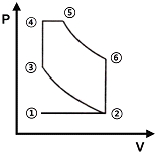
- 약 1.76
- 약 2.85
- 약 0.54
- 약 0.93
(정답률: 49%)
46. 전자제어 가솔린 기관에서 공기유량 센서를 점검하기 위해 파형을 점검한 결과 한 주기가 30ms로 디지털 신호가 출력된다면 주파수는?
- 11.1 Hz
- 33.3 Hz
- 66.6 Hz
- 99.9 Hz
(정답률: 84%)
47. 기관에서 흡기 및 배기 밸브의 서징현상 방지책으로 틀린 것은?
- 부등 피치 스프링이나 원추형 스프링을 사용한다.
- 스프링 상수 값을 크게 하여 사용한다.
- 고유진동수가 다른 2개의 스프링을 함께 사용한다.
- 밸브 스프링의 고유진동수를 높게 한다.
(정답률: 60%)
48. 디젤 연료의 착화성을 나타내는 세탄가는?
- α-메틸나프탈렌과 이소옥탄의 체적혼합비
- 노말 헵탄과 이소헵탄의 체적혼합비
- 세탄과 (α-메틸나프탈렌＋세탄)의 체적혼합비
- 세탄과 이소헵탄의 체적혼합비
(정답률: 91%)
49. 냉각장치에서 냉각수가 줄어드는 직접적인 원인으로 틀린 것은?
- 라디에이터 캡 불량
- 구동 벨트(팬벨트) 풀림
- 히터 혹은 라디에이터 호스 불량
- 서모스탯의 하우징과 개스킷 불량
(정답률: 80%)
50. 전자제어 커먼레일 디젤기관에서 에비분사의 주목적 은?
- 출력향상
- 유해배출가스 저감
- 소음과 진동 저감
- 연비향상
(정답률: 88%)
51. 가솔린 기관의 배출가스 정화장치 중 근접 장착식 촉매장치(MCC : manifold catalytic converter)를 장착하는 목적으로 가장 옳은 것은?
- 완전연소 공연비를 실현하는데 유리하다.
- 산소센서와 가까워지므로 응답성이 좋아진다.
- 냉시동 시 발생하는 유해가스를 줄일 수 있다.
- 노면의 충격으로부터 촉매장치를 보호할 수 있다.
(정답률: 75%)
52. 디젤 사이클의 압축비 : ε, 등압팽창비 : σ일 경우 열효율에 대한 내용으로 옳은 것은? (단, 비열비는 일정하다.)
- ε이 일정할 때 σ가 커질수록 열효율은 크게 된다.
- ε이 일정할 때 σ가 작을수록 열효율은 크게 된다.
- ε이 작아지고 σ가 커질수록 열효율은 크게 된다.
- ε이 증가할수록 열효율의 증가폭은 커진다.
(정답률: 60%)
53. 기관의 실린더와 피스톤의 간극이 클 경우에 나타나는 현상으로 틀린 것은?
- 압축압력의 저하
- 마찰에 의한 마멸 증대
- 오일소비 증대
- 기관의 출력 저하
(정답률: 84%)
54. 핫 필름 방식(hot film type)의 공기유량 센서의 특징으로 옳은 것은?
- 백금선을 사용한다.
- 자기 청정기능의 열선이 있다.
- 세라믹 기판에 히팅 저항을 집적시켰다.
- 응답성이 좋지 않다.
(정답률: 69%)
55. 2행정 기관의 작동에서 소기효율에 영향을 미치는 것으로 가장 거리가 먼 것은?
- 배기 압력
- 소기 압력
- 실린더 행정·내경 비
- 기관의 회전속도
(정답률: 84%)
56. 기관에서 베어링 스프레드를 두는 이유로 틀린 것은?
- 베어링 조립 시 베어링이 캡에 끼워진 채로 있어 작업하기가 편리하다.
- 작은 힘으로 눌러 끼워 베어링이 제자리에 밀착되게 한다.
- 베어링 캡 조립 시 베어링이 하우징에 압착되도록 한다.
- 베어링 조립에서 크러시가 압축됨에 따라 안쪽으로 찌그러지는 것을 방지한다.
(정답률: 55%)
57. 가속페달에서 작용력을 제거할 때 원동기의 가속제어 장치를 가속 위치에서 공회전 위치로 복귀시키는 장치에 대하여 관련법령에서 규정하고 있는 장치의 수는?
- 1개 이상
- 2개 이상
- 3개 이상
- 4개 이상
(정답률: 69%)
58. 캐니스터에 저장되어 있던 연료증발 가스를 서지탱크 로 유입시키는 장치는?
- PCV(positive crankcase ventilation valve)
- PCSV(purge control solenoid valve)
- EGR(exhaust gas recirculation valve)
- 리드밸브(reed valve)
(정답률: 85%)
59. 폭발순서가 1-3-4-2이고, 두 개의 점화코일을 사용하는 DLI 시스템 기관에서 2번 실린더에 점화할 때 동시에 점화 되는 실린더는?
- 1번 실린
- 3번 실린더
- 4번 실린더
- 1, 3, 4번 실린더
(정답률: 74%)
60. 전자제어 가솔린 기관에서 공회전 시 점화시기 제어로 틀린 것은?
- 아이들 진각
- 수온 진각
- 피드백 진각
- 진공 진각
(정답률: 74%)
4과목: 자동차새시
61. 진공 배력식 브레이크의 하이드로 백은 무엇을 이용하여 배력 작용을 하는가?
- 대기 압력과 압축공기의 압력 차
- 흡기다기관(또는 진공펌프)의 부압과 압축공기의 압력차
- 흡기다기관(또는 진공펌프)의 부압과 대기압의 차
- 대기 압력과 배기다기관의 압력
(정답률: 84%)
62. 타이어 호칭 기호가 185/65 S R 14일 때 타이어의 외경은?
- 약 59.61㎝
- 약 47.58㎝
- 약 35.56㎝
- 약 12.02㎝
(정답률: 33%)
63. 비스커스 커플링(viscous coupling)방식의 4륜(4WD) 구동력 분배는?
- 점착력이 우수한 구동륜에 보다 많은 구동력이 전달된다.
- 항상 앞 차축에 구동력이 더 많게 전달된다.
- 접지력이 낮은 차륜을 구동하는 차축에 구동력이 더 많이 전달된다.
- 두 차축에 항상 똑같은 구동력이 전달된다.
(정답률: 76%)
64. 제동안전장치에서 감속브레이크(retarder)에 대한 내용으로 거리가 먼 것은?
- 긴 내리막길에서 풋 브레이크와 겸용하여 사용한다.
- 긴 내리막 길 등에서 베이퍼록 현상을 줄일 수 있다.
- 제동 시 과도한 풋 브레이크 사용을 줄이기 위한 제3 브레이크 역할을 한다.
- 유압 계통을 2분할하여 한 쪽 결함 시 다른 쪽은 정상 작동이 되도록 한다.
(정답률: 84%)
65. 앞바퀴 윤거가 2m인 전륜구동의 차량이 최소회전반경6m인 도로에서 좌회전 주행상태에 대한 설명으로 옳은 것은?
- 좌우 바퀴의 회전수 합은 종 감속기어의 링기어 회전수와 같다.
- 좌회전 시 좌측바퀴가 3회전하면 우측바퀴는 4회전한다.
- 종 감속기의 링기어가 10회전하면 우측바퀴는 12회전 한다.
- 좌측바퀴가 16회전하면 차동장치의 우측 사이드기어는 20회전한다.
(정답률: 67%)
66. 제동력시험기 정밀도 검사기준 및 검사방법에서 설정 하중에 대한 허용 오차 범위의 내용으로 옳은 것은?
- 좌·우차이제동력지시 허용오차는 ±10% 이내일 것
- 좌·우합계제동력지시 허용오차는 ±8% 이내일 것
- 좌·우합계제동력지시 허용오차는 ±5% 이내일 것
- 좌·우제동력지시 허용오차는 ±3% 이내일 것
(정답률: 58%)
67. 전자제어 현가장치의 제어 중 승·하차 시 차체가 흔들리는 현상을 방지하는 제어는?
- 앤티 쉐이크 제어
- 앤티 스쿼드 제어
- 앤티 바운싱 제어
- 앤티 롤 제어
(정답률: 54%)
68. 제동장치에서 발열 또는 급냉각으로 인해 발생할 수 있는 내용으로 틀린 것은?
- 페이드
- 베이퍼록
- 히트 싱크
- 저더
(정답률: 60%)
69. 브레이크액의 구비조건으로 틀린 것은?
- 윤활성이 있을 것
- 빙점이 낮을 것
- 고무제품을 변질시키지 않을 것
- 인화점이 낮을 것
(정답률: 83%)
70. 조향 장치가 갖추어야 할 구비조건으로 거리가 먼 것은?
- 선회 반력을 이기고 경쾌한 조향이 될 수 있도록 알맞은 조향력이 있어야 한다.
- 선회 시 조향휠의 회전과 구동 휠의 선회의 차이가 크지 않아야 한다.
- 진행방향을 바꿀 때 섀시 및 보디 각 부위에 무리한 힘이 작용되지 않아야 한다.
- 선회 시 저항이 크고 선회 후 쉽게 복원되지 않아야 한다.
(정답률: 88%)
71. 자동차의 제동 시 감속도를 A[m/s2], 초속도 V[m/s]라 할 때 제동거리 산출식은? (단, 회전부분 상당중량을 포함한 차량 총중량 : W[kgf], 제동력 : F[kgf], 중력가속도 : g[9.8m/s2])
- AV2/2g
- V2W/2F
- 2g/AV2
- V2W/2gF
(정답률: 49%)
72. 브레이크 드럼의 지름이 450mm, 드럼의 원주에 작용하는 힘이 200kgf, 마찰계수가 0.2일 때 제동토크는?(오류 신고가 접수된 문제입니다. 반드시 정답과 해설을 확인하시기 바랍니다.)
- 9000kgf·m
- 900kgf·m
- 90kgf·m
- 9kgf·m
(정답률: 57%)
73. 전자제어 주행 안정장치(ESP, VDC)의 제어와 거리가 먼 것은?
- 요 모멘트 제어
- 자동 감속 제어
- 오버 스티어 제어
- 바운싱 제어
(정답률: 75%)
74. 무단변속기의 일반적인 특징으로 거리가 먼 것은?
- 운전이 쉽고 변속 충격이 거의 없다.
- 로크 업 영역이 적어 자동변속기에 비해 연비가 나빠진다.
- 주행조건에 알맞도록 변속되어 동력 성능이 향상된다.
- 엔진 출력 특성을 최대한 이용한다.
(정답률: 89%)
75. 전륜구동방식 차량에서 앞 등속조인트 탈거 순서로 가장 적합한 것은?
- 타이어 탈거 - 캐슬 너트 분리 - 너클에서 볼 조인트 볼트(너트) 분리 - 허브에서 등속조인트 분리 - 변속기에서 등속조인트 분리
- 캐슬 너트 분리 - 타이어 탈거 - 너클에서 볼 조인트 볼트(너트) 분리 - 허브에서 등속조인트 분리 - 변속기에서 등속조인트 분리
- 변속기에서 등속조인트 분리 - 타이어 탈거 - 캐슬 너트 분리 - 너클에서 볼 조인트 볼트(너트) 분리 -허브에서 등속조인트 분리
- 타이어 탈거 - 변속기에서 등속조인트 분리 - 너클에서 볼 조인트 볼트(너트) 분리 - 캐슬 너트 분리 -허브에서 등속조인트 분리
(정답률: 73%)
76. 현가장치에서 스프링 위 고유진동으로 제동 시 노스 다이브(nose dive)와 같은 진동현상은?
- 요잉(yawing)현상
- 휠링(wheeling)현상
- 피칭(pitching)현상
- 롤링(rolling)현상
(정답률: 57%)
77. 4센서 3채널 방식의 자동차용 ABS 장치에 대한 설명으로 옳은 것은?
- 3개의 브레이크 파이프와 4개의 유압조정 센서를 가진 ABS이다.
- 4개의 휠스피드 센서와 3개의 유압제어 회로를 가진 ABS이다.
- 3개의 유압조정 센서와 4개의 브레이크 파이프를 가진 ABS이다.
- 4개의 유압제어 회로와 3개의 휠스피드 센서를 가진 ABS이다.
(정답률: 83%)
78. 차륜정렬에서 셋백(set back)에 대한 설명으로 틀린 것은?
- (＋) 셋백은 우측 바퀴가 좌측 바퀴 뒤에 있음을 나타낸다.
- 일반적으로 뒤 차축을 기준으로 한 앞 차축의 평행도를 의미한다.
- 셋백은 각도로 표시한다.
- 전륜 셋백은 캠버 문제를 진단할 때 활용된다.
(정답률: 54%)
79. 수동변속기 차량의 클러치(Clutch)와 관련된 내용으로 거리가 먼 것은?
- 관성 운전 시 사용한다.
- 동력 차단이 신속 정확해야 한다.
- 회전 관성이 커야 한다.
- 슬립이 없어야 한다.
(정답률: 85%)
80. 자동변속기 차량에서 토크컨버터 내부의 댐퍼클러치 작동시점으로 가장 옳은 것은?
- 전진에서 변속이 2속 이상일 때
- 1단 및 후진일 때
- 엔진회전수가 공회전 이하일 때
- 엔진 브레이크 작동일 때
(정답률: 61%)
5과목: 자동차전기
81. 전조등 시험기를 사용할 때의 측정 전 준비사항으로 틀린 것은?
- 자동차를 전조등 시험기의 렌즈 면까지의 거리를 맞추어 진입시킨다.
- 전조등 시험기가 자동차와 직각인지 확인하여 조정한다.
- 타이어의 공기압을 규정으로 맞춘다.
- 자동차가 수평 상태인지 현가장치를 확인한 후 운전자는 하차한다.
(정답률: 73%)
82. 하이브리드 전기자동차의 구동 모터 작동을 위한 전기 에너지를 공급 또는 저장하는 기능을 하는 것은?
- 보조 배터리
- 변속기 제어기
- 고전압 배터리
- 엔진 제어기
(정답률: 88%)
83. 하드 방식의 하이브리드 전기자동차의 작동에서 구동 모터에 대한 설명으로 틀린 것은?
- 구동모터로만 주행이 가능하다.
- 고 에너지의 영구 자석을 사용하며 교환 시 레졸버 보정을 해야 한다.
- 구동 모터는 제동 및 감속 시 회생제동을 통해 고전압 배터리를 충전한다.
- 구동 모터는 발전 기능만 수행한다.
(정답률: 48%)
84. 자동차 에어컨 부품 중에서 액화된 고온 고압의 냉매를 저온 저압의 냉매로 만드는 역할을 하는 것은?
- 컴프레서
- 콘덴서
- 팽창밸브
- 증발기
(정답률: 61%)
85. 축전기 2개(0.4μF, 0.5μF)를 병렬로 접속하고 12V의 전압을 인가할 때 축전기에 저장되는 전기량은?
- 2.8μC
- 10.8μC
- 13.3μC
- 60μC
(정답률: 73%)
86. 가솔린 엔진이 3000 rpm일 때 ATDC 12∼15°에서 최고 폭발압력을 얻으려면 점화 시기는? (단, 점화 후 최고폭발압력에 도달하는 시간은 1/600초이다.)
- BTDC 12∼8°
- BTDC 15∼12°
- BTDC 18∼15°
- BTDC 22∼18°
(정답률: 49%)
87. 점화 2차 파형에서 그림 '②비정상' 과 같이 나타나는 원인으로 옳은 것은?
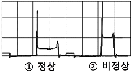
- 점화플러그 간극이 과다 할 때
- 점화플러그가 오염 되었을 때
- 실린더 압축압력이 낮을 때
- 혼합비가 농후 할 때
(정답률: 84%)
88. 고 전압 배터리의 충·방전 과정에서 전압 편차가 생긴 셀을 동일한 전압으로 매칭 하여 배터리 수명과 에너지 용량 및 효율 증대를 갖게 하는 것은?
- SOC(state of charge)
- 파워 제한
- 셀 밸런싱
- 배터리 냉각제어
(정답률: 72%)
89. 자동차에 설치된 각각의 전조등에 대한 주행빔의 최고 광도의 총합의 기준은?
- 15000 cd 이하
- 45000 cd 이하
- 112500 cd 이하
- 225000 cd 이하
(정답률: 63%)
90. 그림과 같은 상태의 회로에서 접지에 연결한 테스트램프를 릴레이의 각 단자에 연결해보았을 때 나타나는 현상에 대한 설명으로 옳은 것은? (단, 테스트 램프 내의 전구는 5W이다.)
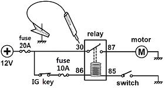
- 30 : 테스트램프 점등과 동시에 20A의 퓨즈가 단선된다.
- 86 : 테스트램프 점등과 동시에 10A의 퓨즈가 단선된다.
- 87 : 테스트램프는 점등하지 않지만 모터는 회전한다.
- 85 : 테스트램프는 점등하지 않지만 모터는 회전한다.
(정답률: 62%)
91. 운행차의 경적소음 측정방법으로 틀린 것은?
- 축전지는 측정개시 전에 정상 충전된 상태이어야 한다.
- 자동차의 원동기를 가동시킨 정차상태에서 5초 동안 작동시켜 측정한다.
- 2개 이상의 경음기가 연동하여 음을 발하는 경우에는 연동상태에서 측정한다.
- 교류식 경음기인 경우에는 원동기회전속도 3000±100 rpm인 상태에서 측정한다.
(정답률: 55%)
92. 두 개의 영구자석 사이에 도체를 직각으로 설치하여 도체에 전류를 공급하면 도체의 한 면에는 전자가 과잉되고 다른 면에는 전자가 부족 되는 현상은?
- 홀 효과
- 렌쯔의 현상
- 칼만 볼텍스 현상
- 자기 유도
(정답률: 75%)
93. 그림(가)는 정상적인 점화 2차 직렬파형이다. 그림 (나)와 같은 파형이 나타난 원인으로 옳은 것은?
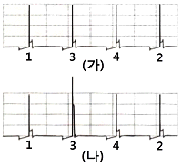
- 수온센서 불량
- 노킹 센서 불량
- 고압케이블의 단선
- 점화 1차회로의 단선
(정답률: 63%)
94. 자동차의 도난방지장치에 입력되는 신호가 아닌 것은?
- 브레이크 스위치
- 도어 록 스위치
- 트렁크 스위치
- 후드 스위치
(정답률: 74%)
95. 자동차의 충전장치에서 AC발전기의 기전력에 관한 설명으로 틀린 것은?
- 로터 코일의 여자전류가 클수록 커진다.
- 스테이터 및 로터 코일이 길수록 커진다.
- 로터 코일의 회전속도가 빠를수록 커진다.
- 발전기의 자극수가 적을수록 커진다.
(정답률: 71%)
96. 컴퓨터 제어 방식 점화 장치인 고강력 점화 방식(HEI) 과 전자 배전 점화 방식(DLI 또는 DIS)의 장점으로 틀린 것은?
- 고·저속에서 매우 안정된 점화 불꽃을 얻을 수 있다.
- 노킹 시 점화시기를 빠르게 하여 노킹을 억제한다.
- 엔진의 작동 상태를 각종 센서로 감지하여 최적의 점화시기로 제어한다.
- 고출력의 점화 코일을 사용하므로 완벽한 연소가 가능하다.
(정답률: 66%)
97. 전기적 에너지를 기계적 에너지로 변환시키는 모터 구동원리는?
- 키르히호프의 법칙
- 플레밍의 오른손 법칙
- 플레밍의 왼손 법칙
- 옴의 법칙
(정답률: 73%)
98. 자동차의 냉방장치에서 리시버 드라이어의 기능으로 틀린 것은?
- 냉매 저장기능
- 수분 제거기능
- 기포 분리기능
- 냉매 팽창기능
(정답률: 74%)
99. 점화플러그의 BP5ES-11이라고 표시에 대한 설명으로 옳은 것은?
- “B"는 플러그 나사부의 길이 이며 14㎜를 나타낸다.
- “P"는 구조와 특징이며 절연체 형식을 말한다.
- “5”는 플러그 간극이며 0.5㎜를 나타낸다.
- “11”은 열가이며 일반적으로 냉형 플러그에 속한다.
(정답률: 57%)
100. 와이퍼 장치 작동 중 스위치 OFF 시 와이퍼가 파킹 위치로 가지 못하는 경우 점검해야 할 부분이 아닌 것은?
- 파킹 접점
- 파킹관련 접지
- 와이퍼 모터 전원 퓨즈
- 와이퍼 모터
(정답률: 77%)